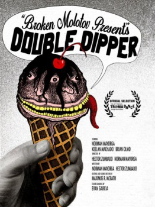

Double Dipper (2025)
The first scoop will save your life… THE SECOND WILL TAKE IT!

Country:United States, 8 minutes
Spoken languages:
Genres:Horror
Director(s):
Writer(s):Norman Mayorga, Hector Zumbado
Video Codec:Unknown
Number: 50
IMDb Rating:

Certification:
Storyline:
With less than a $100 budget, and a whole lotta passion from our studio and crew, we captured one man’s desperate craving for ice cream in a post-apocalyptic world.
Cast:
Brian Olmo (as Ice Cream Man), Norman Mayorga (as Wanderer), Keelan Machado (as Shoe Salesman)
Medium: Media file,
Location: D:\$RECYCLE.BIN\$R2TCNBE\Double Dipper.mp4
Loaned: No
Aspect ratio: Unknown